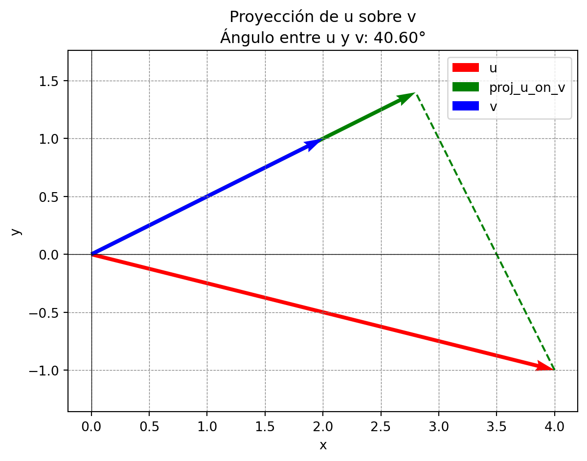

Ejercicios \(\mathbb{R}^2\)
Taller de Vectores en \(\mathbb{R}^2\)
Ejercicios 1
Responda Falso o verdadero a las siguientes afirmaciones. Justifique su respuesta.
Problema 5.1.1 (VF1). En \(R^2\), todo subespacio vectorial debe contener el vector cero.
Problema 5.2.1 (VF2). Sea \(W={(x,y)\in R^2: x+y=2}\). Entonces \(W\) es un subespacio vectorial de \(R^2\).
Problema 5.4.1 (VF3). En \(R^2\), una combinación lineal de vectores puede producir el vector cero solo si todos los coeficientes son cero.
Problema 5.4.2 (VF4). Un conjunto de vectores en \(R^2\) es linealmente dependiente si al menos uno de ellos puede expresarse como combinación lineal de los otros.
Problema 5.3.1 (VF5). El subespacio generado por cualquier conjunto de vectores en \(R^2\) siempre es todo \(R^2\), sin importar los vectores elegidos.
Problema 5.4.3 (VF6). Si un conjunto de vectores en \(R^2\) tiene más de 2 vectores, necesariamente es linealmente dependiente.
Problema 5.5.1 (VF7). La dimensión de un subespacio de \(R^2\) es el número de vectores en cualquier conjunto que lo genere.
Problema 5.5.2 (VF8). Si dos conjuntos de vectores generan el mismo subespacio de \(R^2\), entonces cualquier base de ese subespacio tiene el mismo número de elementos.
Problema 5.5.3 (VF9). En \(R^2\), toda combinación lineal de vectores es única.
Problema 1.2.1 (VF10). El span de los vectores \(\mathbf{u} = (1, 2)\) y \(\mathbf{v} = (3, 4)\) es un subespacio propio de \(\mathbb{R}^2\).
Ejercicio 2
Sean los vectores \(\mathbf{u} = (3, -1)\) y \(\mathbf{v} = (2, 4)\).
1. Calcula \(\mathbf{u} + \mathbf{v}\).
2. Calcula \(2\mathbf{u} - 3\mathbf{v}\).
Verifica la propiedad distributiva:
\[\alpha(\mathbf{u} + \mathbf{v}) \stackrel{?}{=} \alpha\mathbf{u} + \alpha\mathbf{v}\]
tomando \(\alpha = -1\).
Pista: Solo necesitas comparar ambos lados de la igualdad para concluir.
Ejercicio 3
Con los mismos vectores \(\mathbf{u} = (3, -1)\) y \(\mathbf{v} = (2, 4)\):
1. Halla \(\mathbf{u} \cdot \mathbf{v}\).
2. Verifica la propiedad de conmutatividad \(\mathbf{u} \cdot \mathbf{v} = \mathbf{v} \cdot \mathbf{u}\).
3. Encuentra el vector \(\mathbf{v}\) y comprueba que \[\mathbf{v}\cdot\mathbf{v}=||\mathbf{v}||^2.\] 4. Calcula el vector proyección de \(\mathbf{u}\) sobre \(\mathbf{v}\), es decir, \(\text{proj}_{\mathbf{v}}\mathbf{u}\).
Pista: Usa la fórmula:
\[\text{proj}_{\mathbf{v}}\mathbf{u} = \left(\frac{\mathbf{u} \cdot \mathbf{v}}{\|\mathbf{v}\|^2}\right)\mathbf{v}.\]
- Interpreta geometricamente que significa la proyección de un vector sobre otro.
Describa si la siguiente afirmaciones son es verdaderas o falsas:
Si \(\mathbf{u} \cdot \mathbf{v} = 0\), entonces \(\mathbf{u}\) y \(\mathbf{v}\) son ortogonales.
\[\Big|\Big|\frac{\mathbf{u}\cdot\mathbf{v}}{||v||^2}\mathbf{v}\Big|\Big| = \frac{|\mathbf{u}\cdot\mathbf{v}|}{||\mathbf{v}||}\]
Use el procedimiento anterior para calcular el ángulo entre los vectores \(\mathbf{u}\) y \(\mathbf{v}\).
Calcula el ángulo \(\theta\) entre \(\mathbf{u}\) y \(\mathbf{v}\) usando la fórmula:
\[\mathbf{u} \cdot \mathbf{v} = \|\mathbf{u}\|\,\|\mathbf{v}\|\cos(\theta).\]
Ejercicio 4
Dada la recta que pasa por el punto \(\mathbf{P} = (1, -2)\) y que tiene como dirección el vector \(\mathbf{P} = (2, 3)\):
Escribe su ecuación paramétrica en \(\mathbb{R}^2\).
Recuerda que la forma paramétrica se describe como:
\[\mathbf{r}(t) = \mathbf{P} + t\,\mathbf{v}, \quad t \in \mathbb{R}.\]
Verifica que el punto \(\mathbf{Q} = (3,1)\) no pertenece a dicha recta (sustituyendo en la forma paramétrica y comprobando si existe un valor de \(t\) que lo satisfaga).
Escribe la ecuación de forma cartesiana, es decir de la forma \(y =ax+b\).
Ejercicio 5
Considera la recta \(r_1\) en forma paramétrica:
\[r_1: \quad \mathbf{r}(t) = (2, 1) + t \, (3, -1).\]
Encuentra la ecuación paramétrica de la recta \(r_2\) paralela a \(r_1\) y que pase por el punto \((4,2)\).
Dos rectas son paralelas si sus vectores direccionales son múltiplos.
Encuentra la ecuación paramétrica de la recta \(r_3\) perpendicular a \(r_1\) que pase por \((4,2)\).
Dos rectas en \(\mathbb{R}^2\) son perpendiculares si sus vectores direccionales \(\mathbf{d_1}\) y \(\mathbf{d_2}\) cumplen \(\mathbf{d_1}\cdot \mathbf{d_2} = 0\).
Determina el punto de intersección entre \(r_3\) y la recta \(r_1\).
Ejercicio 6
Sea \(\{\mathbf{w}_1, \mathbf{w}_2\}\) con \(\mathbf{w}_1 = (1, 3)\) y \(\mathbf{w}_2 = (2, 6)\).
- Determina si \(\mathbf{w}_1\) y \(\mathbf{w}_2\) son linealmente dependientes o independientes. Explica tu proceso.
- Si son dependientes, describe la relación de dependencia. Si son independientes, justifica por qué.
Ejercicio 7
- Explica en tus propias palabras qué significa que un conjunto de vectores sea base de \(\mathbb{R}^2\).
- Dados los vectores \(\mathbf{a} = (1, 2)\) y \(\mathbf{b} = (2, 1)\), ¿son una base de \(\mathbb{R}^2\)?
- Justifica tu respuesta usando independencia lineal
Ejercicio 8
- ¿Por qué \(\{(0,0)\}\) (el conjunto que solo contiene al vector cero) es un subespacio de \(\mathbb{R}^2\)?
- Si \(S\) es el conjunto de todos los vectores \((x, y)\) tales que \(x + y = 0\), demuestra que \(S\) es un subespacio de \(\mathbb{R}^2\).
- Determina una base para el subespacio \(S\).